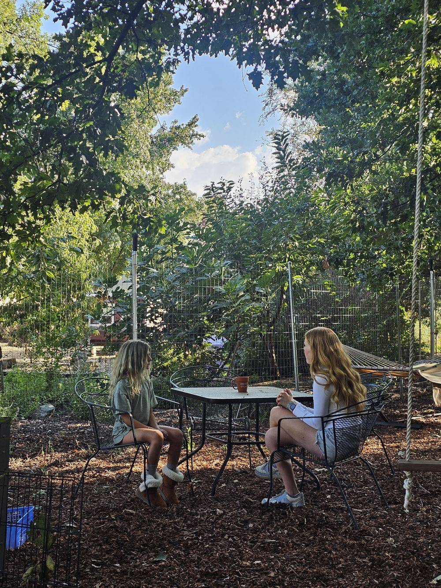

About us
About Warm Springs Care Farm
A working care farm in Boise's East End, and a model other communities can learn from.

Our story
A century-old horse farm with a new job
Horses and people have worked this land on Warm Springs Avenue for more than 100 years. The Haley family bought the property in 2018. They wanted to keep its history as a horse farm and put it to work for Boise's kids: more time outside, more real work to do, and more ways to feel calm and capable.
Linda Haley founded Warm Springs Care Farm with licensed marriage and family therapist Amy Grace and parent advocate Deborah McFadyen. It started with a few animals, a handful of volunteers, and a small group of kids. Today it runs Barn Club, Pre-4-H Club, the Teen Leadership Crew, school field trips, and volunteer days, and hosts partner programs and farm-based therapy.
The Old Worry Tree
Somewhere among the tall trees around the farm is the Old Worry Tree. The kids know how to find it. They leave their worries for the branches to hold and walk away a little lighter.
Impact
The farm by the numbers
5 acres of farm land
15 animals of all shapes and sizes
5,000 hours of nature‑based therapy provided to kids
Mission and values
Why the farm exists
Warm Springs Care Farm improves the mental health and well-being of children, teens, and families through hands-on, nature-based experiences on a working care farm.
Our vision is a place where people and animals connect, heal, and grow together, and a model other communities can learn from and build their own.
Calm
Slowness, breath, and quiet are healing.
Connection
Healing happens through relationship: to a person, an animal, a garden, the land.
Welcome
Everyone is greeted as they are.
Stewardship
We care for the animals, the gardens, and the people who visit.
Hands-on
Real work, real animals, real soil.
Growth
Every season brings change, in plants, in animals, and in people.
Founder and director
Linda Haley
Linda is an educator and gardener who built the farm on a belief she formed in classrooms and gardens: kids feel calmer and more capable when they have real work to do, living things to care for, and adults who notice what they do well. She teaches every child on the farm the same three steps: Notice, Get, Go.

Our team
[Confirm current titles]
- Deborah McFadyenCo-founder and parent advocate
- Amy Grace, LMFTLead therapist and advisory board
- April LeBlanc, RN, BSN, NC-BCSmall animal lead and 4-H leader
- Janelle CarberryYoga instructor and wellness coach
- Joni CornellEquine facilitator, Carbon's Hoofprints
Board of directors
[Confirm]
- Linda M. Haley
- Deborah McFadyen
- Lori Tate, JD
- Jennifer Price, LSW
- Sarah Strand
The model
Building a model for other care farms
Warm Springs proves that a small working farm can support children's mental health, and that the approach can be taught. Linda is documenting how the farm works, from programs and volunteer training to animal care and clinical partnerships, so other communities can build care farms of their own.
If you're thinking about starting a care farm, Linda is glad to talk. She shares what has worked here and what she'd do differently.
Support the farm
Every gift keeps the gate open
Gifts pay for animal feed, vet care, scholarships, and the daily work of a care farm where kids ages 7 to 12 build calm and confidence.
Feeds the goats for a week.
Covers a scholarship for a day on the farm.
Supports a full season of Barn Club.
Keeps the farm running for a month.
Other ways to give: Venmo [@handle] · Zelle [email or phone] · PayPal [link] · By mail: [mailing address] · Supplies from our Amazon wish list
For businesses
Corporate sponsors
Sponsors fund a specific part of the farm, such as Barn Club, field-trip scholarships, animal care, or a new horse shelter, and are thanked by name on our site, in farm news, and on social media. Talk with Linda about a sponsorship that fits your business.
Contact Linda: linda@warmspringscarefarm.org, 208-515-4234
- Friend of the Farm$250
- Garden Sponsor$1,000
- Barn Sponsor$2,500
- Herd Sponsor$5,000
- Founding Partner$10,000
[Proposed levels: confirm before launch]
Partners and supporters
The people and organizations who share the work.
[Add business supporter logos]
- Children's Home Counseling ServicesFarm-based therapy
- 4-H of Ada CountyPre-4-H Club
- Fox & Kids StudioArt Club
- National Charity League of IdahoVolunteers
- Good Heart TechSupporter
- [Mind and Body Medicine partner]
- [Self Defense partner]
Common questions
- Is Warm Springs a therapy clinic?
- No. Warm Springs is a working care farm. Therapy on the farm is provided by licensed clinicians from our partners.
- Is my gift tax-deductible?
- Yes. Warm Springs Care Farm is a 501(c)(3) nonprofit, and gifts are tax-deductible to the extent allowed by law. EIN: 87-1279392
- Can I make a monthly gift?
- Yes. Choose the monthly option when you give online.
- Why is it called Warm Springs?
- The farm is on Warm Springs Avenue in Boise's East End, a neighborhood named for the geothermal hot springs nearby.
- How do I book Linda to speak?
- Email linda@warmspringscarefarm.org with your event date, audience, and the topic you have in mind. See speaking topics.
Get farm news
Seasonal updates, event dates, and stories from the barn, a few times a season.